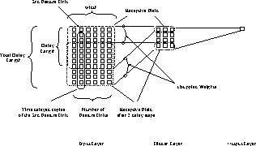

Time delay networks (or TDNN for short), introduced by Alex Waibel
([WHH 89]), are a group of neural networks that have a special
topology. They are used for position independent recognition of
features within a larger pattern. A special convention for naming
different parts of the network is used here (see figure
89]), are a group of neural networks that have a special
topology. They are used for position independent recognition of
features within a larger pattern. A special convention for naming
different parts of the network is used here (see figure  )
)

The activation of a unit is normally computed by passing the weighted
sum of its inputs to an activation function, usually a threshold
or sigmoid function. For TDNNs this behavior is modified through the
introduction of delays. Now all the inputs of a unit are each
multiplied by the N delay steps defined for this layer. So a hidden
unit in figure  would get 6 undelayed input links
from the six feature units, and 7x6 = 48 input links from the seven
delay steps of the 6 feature units for a total of 54 input
connections. Note, that all units in the hidden layer have 54 input
links, but only those hidden units activated at time 0 (at the top
most row of the layer) have connections to the actual feature units.
All other hidden units have the same connection pattern, but shifted
to the bottom (i.e. to a later point in time) according to their
position in the layer (i.e. delay position in time). By building a
whole network of time delay layers, the TDNN can relate inputs in
different points in time or input space.
would get 6 undelayed input links
from the six feature units, and 7x6 = 48 input links from the seven
delay steps of the 6 feature units for a total of 54 input
connections. Note, that all units in the hidden layer have 54 input
links, but only those hidden units activated at time 0 (at the top
most row of the layer) have connections to the actual feature units.
All other hidden units have the same connection pattern, but shifted
to the bottom (i.e. to a later point in time) according to their
position in the layer (i.e. delay position in time). By building a
whole network of time delay layers, the TDNN can relate inputs in
different points in time or input space.
Training in this kind of network is performed by a procedure similar to backpropagation, that takes the special semantics of coupled links into account. To enable the network to achieve the desired behavior, a sequence of patterns has to be presented to the input layer with the feature shifted within the patterns. Remember that since each of the feature units is duplicated for each frame shift in time, the whole history of activations is available at once. But since the shifted copies of the units are mere duplicates looking for the same event, weights of the corresponding connections between the time shifted copies have to be treated as one. First, a regular forward pass of backpropagation is performed, and the error in the output layer is computed. Then the error derivatives are computed and propagated backward. This yields different correction values for corresponding connections. Now all correction values for corresponding links are averaged and the weights are updated with this value.
This update algorithm forces the network to train on time/position independent detection of sub-patterns. This important feature of TDNNs makes them independent from error-prone preprocessing algorithms for time alignment. The drawback is, of course, a rather long, computationally intensive, learning phase.